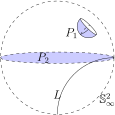

Recall that \(\mathbb{R}^3\) is the set of ordered triples of real numbers \((x,y,z)\text{,}\) and a 3-manifold is a space with the feature that every point has a neighborhood that is homeomorphic to an open 3-ball. We assume that the shape of the universe at any fixed time is a 3-manifold. Evidence points to a universe that is isotropic and homogeneous on the largest scales. If this is the case, then just as in the two-dimensional case, the universe admits one of three geometries: hyperbolic, elliptic, or Euclidean. This section offers a brief introduction to the three-dimensional versions of these geometries before turning to 3-manifolds. The reader is encouraged to see [12] for a broader intuitive discussion of these ideas, or [11] for a more rigorous approach.
Euclidean Geometry in Three Dimensions
Euclidean geometry is the geometry of our experience in three dimensions. Planes look like infinite tabletops, lines in space are Euclidean straight lines. Any planar slice of 3-space inherits two-dimensional Euclidean geometry.
The space for three-dimensional Euclidean geometry is \(\mathbb{R}^3\text{,}\) and we may use boldface notation \(\boldsymbol{v}\) to represent a point in \(\mathbb{R}^3\text{.}\) The group of transformations in this geometry consists of all rotations of \(\mathbb{R}^3\) about lines and all translations by vectors in \(\mathbb{R}^3\text{.}\) The distance between points \({\boldsymbol{v}}=(x_1,y_1,z_1)\) and \({\boldsymbol{w}}=(x_2,y_2,z_2)\) is given by the Euclidean distance formula
Any transformation in the group can be expressed as a screw motion. A screw motion is a transformation of \(\mathbb{R}^3\) consisting of a translation in the direction of a line followed by a rotation about that same line. Of course, rotations about lines and translations are special cases of this more general map.
Hyperbolic Geometry in Three Dimensions
The Poincaré disk model of hyperbolic geometry may be extended to three dimensions as follows. Let the space \(\mathbb{H}^3\) consist of all points inside the unit ball in \(\mathbb{R}^3\text{.}\) That is, let
The unit 2-sphere \(\mathbb{S}^2\) bounds \(\mathbb{H}^3\text{,}\) and is called the sphere at infinity. Points on the sphere at infinity are called ideal points and are not points in \(\mathbb{H}^3\text{.}\)
The group of transformations for three-dimensional hyperbolic geometry is generated by inversions about spheres that are orthogonal to the sphere at infinity. Inversion about a sphere is defined analogously to inversion in a circle. Suppose \(S\) is a sphere in \(\mathbb{R}^3\) centered at \(\boldsymbol{v_0}\) with radius \(r\text{,}\) and \(\boldsymbol{v}\) is any point in \(\mathbb{R}^3\text{.}\) Define the point symmetric to \(\boldsymbol{v}\) with respect to \(S\) to be the point \(\boldsymbol{v}^*\) on the ray \(\overrightarrow{\boldsymbol{v_0v}}\) such that
One may prove that inversion about a sphere \(S\) will send spheres orthogonal to \(S\) to themselves. So, composing two inversions about spheres orthogonal to \(\mathbb{S}^2_\infty\) generates an orientation preserving transformation of hyperbolic three-space \(\mathbb{H}^3\text{.}\) The transformation group consists of all such compositions. Lines in this geometry correspond to arcs of clines in \(\mathbb{H}^3\) that are orthogonal to the sphere at infinity (see line \(L\) in Figure 8.1.1). These lines are geodesics in \(\mathbb{H}^3\text{.}\) As in the two-dimensional case, Euclidean lines through the origin of \(\mathbb{H}^3\) are also hyperbolic lines. A plane in this geometry corresponds to the portion of a sphere or Euclidean plane inside \(\mathbb{H}^3\) that meets the sphere at infinity at right angles, such as planes \(P_1\) and \(P_2\) in Figure 8.1.1. If we restrict our attention to any plane in \(\mathbb{H}^3\text{,}\) we recover the two-dimensional hyperbolic geometry of Chapter 5.

Figure8.1.1 One model of hyperbolic space \(\mathbb{H}^3\text{,}\) the open unit 2-ball.
Elliptic Geometry in three dimensions
Three-dimensional elliptic geometry is derived from the geometry that the 3-sphere \(\mathbb{S}^3\) inherits as a subspace of the Euclidean space \(\mathbb{R}^4\text{.}\) The 3-sphere consists of all points in 4-dimensional space one unit from the origin:
Great circles in \(\mathbb{S}^3\) are circles of maximum diameter drawn in the space. Great circles correspond to geodesics in the space. Similarly, a great 2-sphere in \(\mathbb{S}^3\) is a 2-sphere of maximum diameter drawn in the space. As a subspace of \(\mathbb{S}^3\text{,}\) a great 2-sphere inherits the elliptic geometry of Chapter 6. The 3-sphere is discussed in more detail in Example 8.1.3.
The transformation group for elliptic geometry in three dimensions is conveniently described by viewing \(\mathbb{R}^4\) as the set of quaternions. A quaternion has the form \(a +
b\textbf{i} + c\textbf{j}+ d\textbf{k}\) where \(a, b, c, d\) are real numbers and \(\textbf{i}, \textbf{j},\) and \(\textbf{k}\) are imaginary numbers with the feature that \(\textbf{i}^2 = \textbf{j}^2 = \textbf{k}^2 = -1\) and the additional property that the product \(\textbf{ijk} = -1\text{.}\) The constant \(a\) is called the scalar term of the quaternion \(q = a +
b\textbf{i} + c\textbf{j}+ d\textbf{k}\text{.}\) The modulus of \(q\) is \(|q|=\sqrt{a^2+b^2+c^2+d^2}\text{.}\) A quaternion \(q\) is called a unit quaternion, if \(|q| = 1\text{.}\) The conjugate of \(q\text{,}\) denoted \(q^*\text{,}\) is the quaternion \(q^* = a - b\textbf{i} - c\textbf{j} - d\textbf{k}\text{.}\) One can check that \(q \cdot q^* = |q|^2\text{.}\) The 3-sphere then consists of all unit quaternions.
The transformation group for the geometry on \(\mathbb{S}^3\) is generated by multiplication on the left and/or right by unit quaternions. For fixed unit quaternions \(u\) and \(v\text{,}\) the map \(T:\mathbb{S}^3 \to \mathbb{S}^3\) by \(T(q) = u q v\) is a typical transformation in three-dimensional elliptic geometry. These transformations preserve antipodal points on the 3-sphere - distinct points on \(\mathbb{S}^3\) that are on the same Euclidean line through the origin in \(\mathbb{R}^4\text{.}\)
As in the two-dimensional case, three-dimensional Euclidean, hyperbolic, and elliptic geometries are homogenous, isotropic and metric. Furthermore, triangles distinguish the geometries: in Euclidean space \(\mathbb{R}^3\text{,}\) a triangle has angle sum equal to \(\pi\) radians; in \(\mathbb{S}^3\) any triangle angle sum exceeds \(\pi\) radians; in \(\mathbb{H}^3\) any triangle angle sum is less than \(\pi\) radians. As a result, if we place a solid like a dodecahedron in \(\mathbb{H}^3\) (so that the faces are portions of planes in \(\mathbb{H}^3\)), the angles at which the corners come together are smaller than the corner angles of the Euclidean dodecahedron. These angles shrink further as the corner points of the solid approach ideal points on the sphere at infinity. On the other hand, placing the dodecahedron in \(\mathbb{S}^3\) will increase the angles at the corners.
This flexibility is very useful. Whereas surfaces can be constructed from polygons by identifying their edges in pairs, many 3-manifolds can be constructed from a 3-complex (such as the Platonic solids) by identifying its faces in pairs. A 3-manifold built in this way will admit either Euclidean geometry, hyperbolic geometry, or elliptic geometry depending on how, if at all, the corner angles need to change so that the corners come together to form a perfect patch of three-dimensional space. Now we investigate a few 3-manifolds and the geometry they admit.
Example8.1.2The 3-torus
We may think of the 3-torus \(\mathbb{T}^3\) as a cubical room with the following face (or wall) identifications: if we propel ourselves (with a jet pack) up through the ceiling, we reappear through the floor directly below where we had been. For instance, the elliptical points in the following figure are identified. Each point on the top face is identified with the corresponding point on the bottom face. If we fly through the left wall we reappear through the right wall at the corresponding spot (see the triangles in the figure). If we fly through the front wall we reappear through the back wall at the corresponding spot (see the squares in the figure).
The 3-torus is the three-dimensional analogue of the torus video screen we saw on the first pages of this text. In fact, a slice of the 3-torus in a plane parallel to one of the faces is a torus. One checks that under the face identification, all eight corners come together in a single point. The angles at these corners are such that they form a perfect patch of three-dimensional space. We do not need to inflate the corner angles (in elliptic space) or shrink the angles (in hyperbolic space) in order for the corners to come together perfectly.
We can also view the 3-torus as an orbit space as discussed in Section 7.7. In particular, let \(T_x, T_y, T_z\) represent translations of \(\mathbb{R}^3\) by one unit in the \(x\)-direction, \(y\)-direction, and \(z\)-direction, respectively. That is, \(T_x(x,y,z) = (x+1,y,z)\text{,}\) \(T_y(x,y,z) = (x,y+1,z)\) and \(T_z(x,y,z)
= (x,y,z+1)\text{.}\) These three transformations generate a group of transformations \(\Gamma\) of \(\mathbb{R}^3\text{,}\) and any transformation in the group has the form \(T(x,y,z) = (x + a, y + b, z + c)\) where \(a, b,
c\) are integers. A fundamental domain of the quotient space \(\mathbb{R}^3/\Gamma\) is the unit cube
\begin{equation*}
\mathbb{I}^3 = \{(x,y,z) ~|~ 0 \leq x, y, z \leq 1 \},
\end{equation*}
and all the images of this cube under the transformations in \(\Gamma\) tile \(\mathbb{R}^3\text{.}\) The 3-torus is a quotient of \(\mathbb{R}^3\) generated by Euclidean isometries, and it inherits Euclidean geometry.
The 3-torus is one of just ten compact and connected 3-manifolds admiting Euclidean geometry. Of these ten, six are orientable, and four are non-orientable. The 3-torus is orientable, and the other five orientable Euclidean manifolds are presented below in Example 8.1.7 and Example 8.1.9.
The elliptic 3-manifolds have also been classified. There are infinitely many different types, and it turns out they are all orientable. The 3-sphere is the simplest elliptic 3-manifold, and Albert Einstein assumed the universe had this shape when he first solved his equations for general relativity. He found a static, finite, simply connected universe without boundary appealing for aesthetic reasons, and it cleared up some paradoxes in physics that arise in an infinite universe. However, the equations of general relativity only tell us about the local nature of space, and do not fix the global shape of the universe. In 1917, the Dutch astronomer Willem De Sitter (1872-1934) noticed that Einstein's solutions admitted a another, different global shape: namely three-dimensional elliptic space obtained from the 3-sphere by identifying antipodal points, just as we did in Chapter 6 in the two-dimensional case.
Example8.1.3The 3-sphere
Recall, the 3-sphere consists of all points in 4-dimensional space 1 unit from the origin:
One model of \(\mathbb{S}^3\) consists of two solid balls in \(\mathbb{R}^3\) whose boundary 2-spheres are identified point for point, as in the following figure. The figure shows a path from point \(a\) to point \(b\) in \(\mathbb{S}^3\) that goes through the point \(p\) on the boundary of the left-hand solid ball before entering the right-hand solid ball through the point on its boundary with which \(p\) has been identified (also called \(p\)).
The 3-sphere has interesting features, often accessible by analogy with the 2-sphere. If you slice the 2-sphere with a plane in \(\mathbb{R}^3\text{,}\) the intersection is a circle (or a single point if the plane is tangent to the 2-sphere). Moreover, the circle of intersection is a geodesic on the 2-sphere if it is a great circle: a circle of maximum radius drawn on the 2-sphere. Bumped up a dimension, if you “slice” the 3-sphere with \(\mathbb{R}^3\text{,}\) the intersection is a 2-sphere (or a single point if the slice is tangent to \(\mathbb{S}^3\)). Moreover, the 2-sphere of intersection is a great 2-sphere if it is a 2-sphere of maximum diameter drawn in \(\mathbb{S}^3\text{.}\) The boundary 2-sphere common to both solid balls in the figure is a great 2-sphere of \(\mathbb{S}^3\text{.}\)
One may also view \(\mathbb{S}^3\) by stereographically projecting it into the space obtained from \(\mathbb{R}^3\) by adding a point at \(\infty\text{,}\) much as we identified \(\mathbb{S}^2\) with the extended plane via stereographic projection in Section 3.3. Let \(\widehat{\mathbb{R}^3}\) denote real 3-space with a point at infinity attached to it. To construct the stereographic projection map, it is convenient to first express \(\mathbb{R}^3\) in terms of pure quaternions. A pure quaternion is a quaternion \(q\) whose scalar term is 0. That is, a pure quaternion has the form \(q =
b\textbf{i} + c\textbf{j} + d\textbf{k}\text{.}\) The point \((x,y,z)\) in \(\mathbb{R}^3\) is identified with the pure quaternion \(q = x\textbf{i} + y\textbf{j} + z
\textbf{k}.\)
Though we are working in four-dimensional space, Figure 3.3.4 serves as a guide in the construction of the stereographic projection map. Let \(N = (0,0,0,1)\) be the north pole on \(\mathbb{S}^3\text{.}\) If \(P = (a,b,c,d)\) is any point on \(\mathbb{S}^3\) other than \(N\text{,}\) construct the Euclidean line through \(N\) and \(P\text{.}\) This line has parametric form
We define the image of \(P\) under stereographic projection to be the intersection of this line with the three-dimensional subspace consisting of all points \((x,y,z,0)\) in \(\mathbb{R}^4\text{.}\) This intersection occurs when \(1 + t(d-1) = 0\text{,}\) or when
\begin{equation*}
t = \frac{1}{1-d}.
\end{equation*}
Then the stereographic projection map \(\phi:\mathbb{S}^3 \to
\widehat{\mathbb{R}^3}\) is given by
\begin{equation*}
\phi((a,b,c,d)) =
\begin{cases}\frac{a}{1-d}\textbf{i}+\frac{b}{1-d}\textbf{j}+\frac{c}{1-d}\textbf{k} \amp \text{ if \(d \neq 1\); } \\
\infty \amp \text{ if \(d=1\). }
\end{cases}
\end{equation*}
In this way, we can transfer the geometry of the 3-sphere into real 3-space with a point at infinity attached to it. For instance, if \(P = (a,b,c,d)\) is on the 3-sphere, its antipodal point is \(-P = (-a,-b,-c,-d)\) and one can show (in the exercises) that these points get mapped by \(\phi\) to points in \(\mathbb{R}^3\) (pure quaternions) \(q = \phi(P)\) and \(u = \phi(-P)\) with the property that \(q \cdot u^* = -1\text{.}\) As a result, two points \(q\) and \(u\) in \(\widehat{\mathbb{R}^3}\) are called antipodal points if they satisfy the equation \(q \cdot u^* = -1\text{.}\)
Example8.1.4The Poincaré dodecahedral space
The Poincaré dodecahedral space has been given consideration as a model for the shape of our universe (see [25]). Start with a dodecahedron living in \(\mathbb{R}^3\) (we're thinking of it as a solid now, not a surface) and identify opposite faces with a one-tenth clockwise twist (rotation by \(2\pi/10\) radians). It is cumbersome to indicate all face identifications, so the figure below shows the identification of the front face with the back face. For instance, the two corners labeled with a 1 get matched.Notice: no points in the interior of the dodecahedron get identified.
With this face identification the twenty corners of the dodecahedron come together in five groups of four (one group of 4 is marked with vertices in the figure), and the angles are too small for the corners to create a full open ball of three-dimensional space when they come together. Placing the dodecahedron in elliptic space inflates the corner angles, and we may make these angles fat enough to determine a perfect three-dimensional patch of space.
Extending the ideas of Section 7.7 to this case, one can show that the Poincaré dodecahedral space space is a quotient of the 3-sphere \(\mathbb{S}^3\) by a group of isometries. The dodecahedron pictured here is a fundamental domain of the space. Just as the polygons in Section 7.7 tiled the space in which they lived, and the cubical fundamental domain of the 3-torus tiles \(\mathbb{R}^3\text{,}\) the dodecahedron tiles \(\mathbb{S}^3\text{.}\) Although far from obvious, it turns out that \(\mathbb{S}^3\) is tiled by 120 copies of this dodecahedron!
Hyperbolic 3-manifolds have not been completely classified, but a remarkable relationship exists between geometry and shape in this case: a connected orientable 3-manifold supports at most one hyperbolic structure. This marks an important difference from the two-dimensional case. If a two-dimensional being knows that she lives in a two-holed torus, say, then the area of her universe is determined by its curvature, thanks to the Gauss-Bonnet formula, but other geometric properties may vary, such as the length of minimal-length closed geodesic paths in the universe, as we saw in Example 7.6.6. No such freedom exists in the three-dimensional case.
Here is one hyperbolic 3-manifold, also built as a quotient of the dodecahedron.
Example8.1.5The Seifert-Weber space
Identify opposite faces of the dodecahedron with a three-tenths clockwise turn. With this identification, all twenty corners of the dodecahedron come together to a single point, and no such identification is possible unless we drastically shrink the corner angles. We may do this by placing the dodecahedron in hyperbolic space. The resulting hyperbolic 3-manifold is called the Seifert-Weber space.
Example8.1.6Lens spaces
The lens spaces \(L(p,q)\) form an infinite family of elliptic 3-manifolds. Assume \(p > q\) are positive integers whose largest common factor is 1. The lens spaces may be defined as follows. Consider the unit solid ball living in \(\mathbb{R}^3\) whose boundary is the unit 2-sphere. The ball consists of all points \((x,y,z)\) such that \(x^2 + y^2 + z^2 \leq 1\text{.}\) Any point on the boundary 2-sphere can be expressed in coordinates \((z,t)\) where \(z\) is a complex number, \(t\) is real, and \(|z|^2 + t^2 = 1\text{.}\) The lens space \(L(p,q)\) is obtained from the solid ball by identifying each point \((z,t)\) on the boundary 2-sphere with the point \((e^{(2\pi q/p)i} z,-t)\text{.}\) Note that the north pole of the boundary 2-sphere is \((0,1)\) and it is identified with the south pole \((0,-1)\text{.}\) Any other point \(u\) in the northern hemisphere is identified with a single point in the southern hemisphere. This point is found by reflecting \(u\) across the \(xy\)-plane, then rotating around the \(z\)-axis by \(2\pi q/p\) radians. Each point on the equator is identified with \(p-1\) other points.
The lens space \(L(p,q)\) can be obtained from a cell division of the unit solid ball. The cell division has \(p+2\) vertices: the north pole \(n\text{,}\) the south pole \(s\text{,}\) and \(p\) equally spaced vertices along the equator, label them \(v_0, v_1, \cdots,
v_{p-1}\text{.}\) The following figure depicts this scene for \(p = 5\text{.}\) There is an edge connecting \(v_i\) to each of its neighbors on the equator, creating \(p\) edges around the equator. There is an edge connecting each \(v_i\) with \(n\) and an edge connecting each \(v_i\) with \(s\text{,}\) as pictured, for a total of \(3p\) edges. The vertices and edges create 2\(p\) triangular faces on the boundary sphere, half of them in the northern hemisphere. The 3-complex has a single 3-cell, corresponding to the interior of the solid ball.
Let \(N_i\) denote the face in the northern hemisphere whose vertices are \(v_i, v_{i+1}, n\text{.}\) Let \(S_i\) be the face in the southern hemisphere whose vertices are \(v_i, v_{i+1}\text{,}\) and \(s\text{.}\) The lens space \(L(p,q)\) is created by identifying face \(N_i\) with face \(S_{i+q}\) where the sum \(i + q\) is taken modulo \(p\text{.}\) For instance, in \(L(5,2)\text{,}\) the shaded face \(N_0\) in the figure is identified with the shaded face \(S_2\) (and the circle of points pictured in \(N_0\) gets sent to the circle of points in \(S_2\)). The faces \(N_1\) and \(S_3\) are identified, as are \(N_2\) with \(S_4\text{,}\) \(N_3\) with \(S_0\) and \(N_4\) with \(S_1\text{.}\)
Example8.1.7The Hantschze-Wendt manifold
This interesting manifold can be constructed from two identically sized cubes that share a face, as in the following figure. The resulting box has 10 faces to be identified in pairs. A three-dimensional bug with a jet pack living in the manifold would experience the following face identifications. The top and bottom faces are identified just as they were in the 3-torus. Each point on the top back face (see the circle in the figure) is identified with a single point on the bottom back face. This point is the reflection of the given point across the vertical segment bisecting the face. The top front face and the bottom front face are identified the same way. The figure shows two square points on these faces that are identified. The top left face and bottom right face are identified with a 180\(^\circ\) rotation (see the elliptical point and its image point), as are the bottom left face and the top right face (the two triangular points are identified). This 3-manifold also inherits Euclidean geometry.
A more elegant description of this manifold makes use of the orbit space construction of Section 7.7. Consider a unit cube sitting in \(\mathbb{R}^3\text{.}\) Let \(T_1\) be the following Euclidean transformation: Rotate by 180\(^\circ\) about segment 1 in Figure 8.1.8(a) and then translate along the length of that segment. The original cube and its image are pictured in Figure 8.1.8(b). Let \(T_2\) be defined similarly using segment 2 of Figure 8.1.8(a). The original cube and its image under \(T_2\) are pictured in Figure 8.1.8(c). The transformation \(T_3\) is defined the same way using segment 3, and Figure 8.1.8(d) depicts its effect on the original cube. Each of these transformations is a screw motion. In particular, each screw motion consists of rotation by 180\(^\circ\) and translation by unit length. The Hantzsche-Wendt manifold is then the quotient of \(\mathbb{R}^3\) by the group of Euclidean isometries generated by the three screw motions, and it inherits Euclidean geometry.
Figure8.1.8 Describing the Hantzsche-Wendt Manifold via a group of transformations.
By repeated applications of the three transformations and their inverses one may produce image cubes covering half of \(\mathbb{R}^3\) in a checkerboard pattern. The other points in \(\mathbb{R}^3\) are themselves grouped into cubes and form the other half of the checkerboard pattern. It follows that the ten-faced solid in Example 8.1.7 is a fundamental domain of the manifold, and the face identifications are determined by the transformation group.
Example8.1.9Four more Euclidean 3-manifolds
Two orientable 3-manifolds arise from slight changes to the 3-torus construction of Example 8.1.2. The quarter turn manifold results when the front and back faces of a cube are identified with a 90\(^\circ\) rotation, while the remaining 2 pairs of opposite faces are identified directly, as they were for the 3-torus. Figure 8.1.10(a) depicts this identification. The F on the front face is identified with an F on the back face by a one-quarter turn.
The half turn manifold results when the front and back faces of a cube are identified with a 180\(^\circ\) rotation, while the remaining 2 pairs of opposite faces are identified directly, as they were for the 3-torus. See Figure Figure 8.1.10(b).
The remaining two connected, compact, orientable Euclidean 3-manifolds have a hexagonal prism as the fundamental domain. A hexagon can be used to tile the plane, and copies of a hexagonal prism as in Figure 8.1.10(c) can tile \(\mathbb{R}^3\text{.}\) Note that the prism has two hexagonal faces and the other six faces are parallelograms. The one-third turn manifold is obtained as follows: directly identify parallelograms that are opposite one another, and identify the two hexagonal faces with a rotation of 120\(^\circ\text{,}\) as in Figure 8.1.10(c). The one-sixth turn manifold is obtained by identifying the parallelograms as before, but the two hexagonal faces by a rotation of just 60\(^\circ\text{,}\) as in Figure 8.1.10(d). More detailed discussions of these and the non-orientable Euclidean 3-manifolds can be found in [12] and [16].
Figure8.1.10 Four Euclidean 3-manifolds: (a) the quarter turn manifold; (b) the half turn manifold; (c) the one-third turn manifold; and (d) the one-sixth turn manifold.
a. Show that \(\textbf{ij} = \textbf{k}\text{,}\) \(\textbf{jk} = \textbf{i},\) and \(\textbf{ki}=\textbf{j}\text{.}\)
b. Show that \(\textbf{ji} = -\textbf{k}\text{,}\) \(\textbf{kj} = -\textbf{i}\text{,}\) and \(\textbf{ik}= -\textbf{j}.\)
c. The conjugate of a quaternion \(q = a + b\textbf{i} + c\textbf{j} +
d\textbf{k}\) is \(q^* = a - b\textbf{i} - c\textbf{j} - d\textbf{k}\text{.}\) The modulus of \(q\) is \(|q| = \sqrt{a^2 + b^2 + c^2 + d^2}\text{.}\) Prove that \(q \cdot q^* = |q|^2\) for any quaternion.
d. Prove that \(|uv| = |u| \cdot |v|\) for any quaternions. Thus, the transformations in three-dimensional elliptic geometry, which have the form \(T(q) = u q v\) where \(u, q, v\) are unit quaternions, do send a point of \(\mathbb{S}^3\) to a point on \(\mathbb{S}^3\text{.}\)
2
Suppose \(P = (a,b,c,d)\) and \(-P = (-a,-b,-c,-d)\) are diametrically opposed points on \(\mathbb{S}^3\text{.}\) Prove that
where \(\phi : \mathbb{S}^3 \to \widehat{\mathbb{R}^3}\) is stereographic projection.
3
Verify that in the 3-torus of Example 8.1.2, all eight corners come together at a single point.
4
Verify that in the Poincaré dodecahedral space of Example 8.1.4, the corners come together in five groups of four. Specify the five groups.
5
Verify that in the Seifert-Weber space of Example 8.1.5, all 20 corners come together in a single point.
6
What happens if you identify each pair of opposite faces in a cube with a one-quarter twist? Convince yourself that not all 8 corners come together at a single point, so that the result is not a Euclidean 3-manifold.